2. Likformighet
Tag och gör trianglar på Geobräde. Utgå från en och förstora och förminska dem så att förhållandet på sidornas längder hålls konstanta. Vad märker du för storleken av vinklarna?
Likformighetssats 1 för trianglar (vv)
Om två vinklar i en triangel är lika stora som två vinklar i en annan triangel är trianglarna likformiga.

|
I figuren till höger gäller för trianglarna ABC och ADE att vinkeln BAC är gemensam. Vinklarna ACB och AED är lika stora. Då gäller det att trianglarna ABC och ADE är likformiga, \( \triangle ABC \thicksim \triangle ADE \). Då kan vi bilda följande förhållanden mellan trianglarnas sidor \( \dfrac{AB}{AD} =\dfrac{AC}{AE} = \dfrac{CB}{ED} \). Här bildar vi förhållande mellan motsvarande delar på trianglarna. Vi kan vidare bilda förhållanden för triangeln som \( \dfrac{AC}{AB} = \dfrac{AE}{AD} \). Här bildar vi ett förhållande mellan trianglarna. Oberoende hur du bildar förhållandet mellan två sidor kommer du fram till samma resultat bara du kommer ihåg att identifiera motsvarande delar i figurerna. |
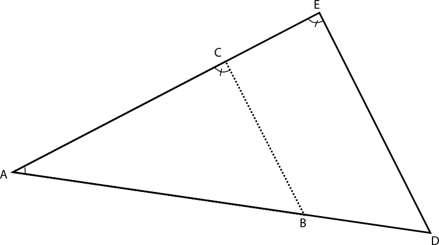 |
Likformighetssats 2 för trianglar (sss)
Om förhållandet mellan motsvarande sidor är samma är trianglarna likformiga.
Likformighetssats 3 för trianglar (svs)
Om förhållandet mellan två motsvarande sidor än samma och vinkeln mellan sidorna är lika stor är trianglarna likformiga.
För trianglar gäller det att någon av likformighetssatserna gäller för att trianglarna är likformiga.
Exempel 1 Brädden av en å bestämdes genom att utnyttja ett träd på andra stranden och mätningar som utfördes syns i bilden. Hur bred är ån?
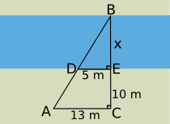
Lösning
\( \begin{array}{lrcll} \textrm {För vinklarna gäller att} & \measuredangle ACB & = & \measuredangle DEB & \textrm{} \\ \textrm {och att} & \measuredangle ABC & = & \measuredangle DBE & \textrm{} \\ \textrm {Vi får att} & \triangle BDE & \sim & \triangle BAC & \textrm{} \\ \textrm {Vi bildar ett förhållande} & \dfrac{BC}{BE} & = & \dfrac{AC}{DE} & \textrm{} \\ \\ \textrm {och ersätter med värden} & \dfrac{x+10}{x} & = & \dfrac{13}{5} & \textrm{} \\ \textrm {} & 5x+50 & = & 13x & \textrm{} \\ \textrm {} & 8x & = & 50 & \textrm{} \\ \textrm {} & x & = & \dfrac{50}{8} & =\underline{\underline{6,25 \textrm{ m}}} \\ \textrm {} & & & & \textrm{} \\ \end{array} \)
Exempel 2 På vilken höjd finns leden för benen på ett strykbräde då benen ser som följande?

Lösning
\( \begin{array}{lrcll} \textrm{Vi bildar ett förhållande} & \dfrac{x}{50} & = & \dfrac{90-x}{30} & \textrm{} \\ \textrm {} & 30x & = & 50(90-x) & \textrm{} \\ \textrm {} & 30x & = & 4500-50x & \textrm{} \\ \textrm {} & 80x & = & 4500 & \textrm{} \\ \textrm {} & x & = & \dfrac{4500}{80} & =\underline{\underline{56,25 \textrm{ cm}}} \\ \end{array} \)
Uppgifter
- Kombinera de likformiga figurerna. Välj bland följande figurer.
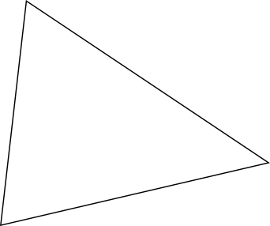
 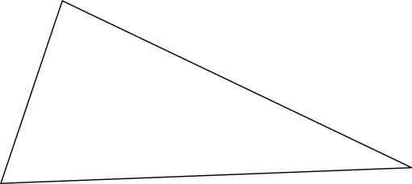
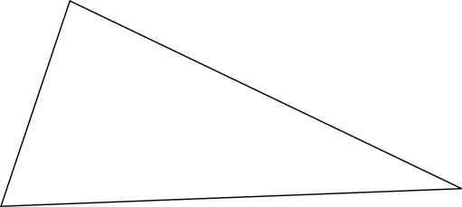
Figur 1 Figur 2 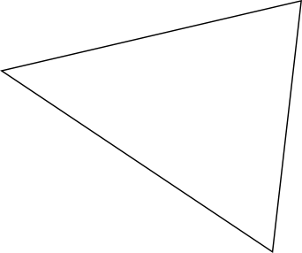 


Figur 1 Figur 2 - Vilka figurer är likformiga? Välj bland följande:
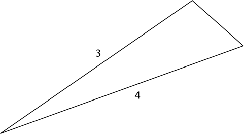
 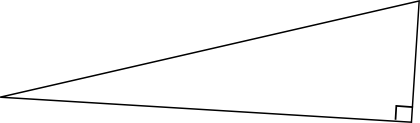
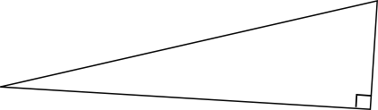
Figur 1 Figur 2 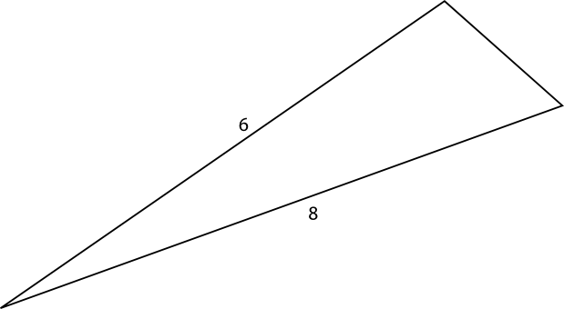 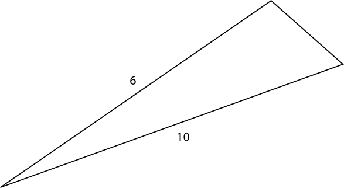 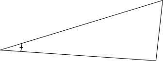 Figur 1 Figur 2 - För figuren nedan, kombinera de sträckor som gör att figurerna är likformiga. Kom ihåg att namnge så att vinklarna stämmer överrens.

Figuren ADF är likformig med figuren XXX eftersom \( \measuredangle FAD = \measuredangle GAC \) och \( \measuredangle ADF = \measuredangle ACG \).
Trianglarna BDE är likformig med ADF eftersom \( \measuredangle EBD = \measuredangle \) XXX och \( \measuredangle BED = \measuredangle \) XXX.
Eftersom triangeln ADF är likformig med triangeln ACG och triangeln ADF är likformig med triangeln BDE gäller att triangeln ACG är likformig med triangeln XXX.
För sidorna i de likformiga trianglarna gäller att AC motsvaras av XXX och XXX. Sidan BE motsvaras i de andra trianglarna av sidorna XXX och XXX. Sidan DE motsvaras av sidorna XXX och XXX.
Figuren ADF är likformig med figuren [ACG] eftersom \( \measuredangle FAD = \measuredangle GAC \) och \( \measuredangle ADF = \measuredangle ACG \).
Trianglarna BDE är likformig med ADF eftersom \( \measuredangle EBD = \measuredangle \) [FAD] och \( \measuredangle BED = \measuredangle \) [AFD].
Eftersom triangeln ADF är likformig med triangeln ACG och triangeln ADF är likformig med triangeln BDE gäller att triangeln ACG är likformig med triangeln [BDE].
För sidorna i de likformiga trianglarna gäller att AC motsvaras av [AD eller BD] och [AD eller BD]. Sidan BE motsvaras i de andra trianglarna av sidorna [AG eller AF] och [AG eller AF]. Sidan DE motsvaras av sidorna [CG eller DF] och [CG eller DF].
- Sträckorna BC och DE är parallella. Bestäm längden av BC.

Bilda förhållanden genom att utnyttja likformiga trianglar.
Vi bildar förhållanden: \( \dfrac{BC}{DE} = \dfrac{AB}{AD} \Leftrightarrow \dfrac{x}{7,5} =\dfrac{4}{4+2} \) ger att \( x=5,0 \).
- Bestäm höjden av trädet i figuren då personen som står bredvid trädet är 1,70 m lång och hens skugga är 2,0 m lång.
Använd dig av likformighet, inte av Pyhtagoras sats.

Vi bildar följande förhållande: \( \dfrac{h}{1,7} = \dfrac{8,5}{2,0} \) som ger att h = 7,225 m. Vi avrundar till två gällande siffror, 7,2 m.
- Rita på GeoGebra
- en triangel vars sidor är 3, 4 och 5 enheter långa.
- en triangel som är likformig med triangeln i a. fallet.
- två trianglar som sins emellan är likformiga men inte likformiga med triangeln i a. fallet.
Något i stil med bilden. Koordinataxlarna är valda så att de inte syns.
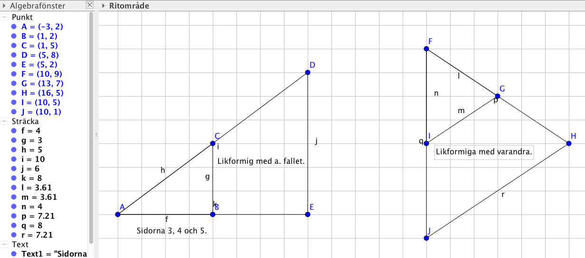
- Hur långt avstånd är i verkligheten en sträcka som är 5,7 cm på en karta om kartans skala är
- 1: 15 000
Vi får följande förhållande \( \dfrac{x}{5,7} = \dfrac{15000}{1} \) som är 85500 cm. Avrundat blir det 855 m.
- 1: 200 000
Vi får bildar förhållandet \( \dfrac{x}{5,7} = \dfrac{200000}{1} \) som är 1 140 000 cm som är 11,4 km.
- 10:1
Vi får bildar förhållandet \( \dfrac{x}{5,7} = \dfrac{1}{10} \) som är 0,57 cm.
- 1: 15 000
- Avståndet mellan Tammerfors och Lahtis är 130 km. Hur långt är avståndet mellan städerna på en karta om skalan är
- 1: 50 000
Vi ändrar avståndet till cm, 130 km = 130 000 m = 13 000 000 cm, och bildar förhållandet \( \dfrac{x}{13000000} = \dfrac{1}{50000} \). Vi får \( x= 260 \) cm.
- 1: 4 500 000
Vi ändrar avståndet till cm och bildar ett förhållande \( \dfrac{x}{13000000} = \dfrac{1}{4500000} \) ger att \( x=2,88\ldots \) cm.
- 1: 125 000
Vi ändrar avståndet till cm och bildar ett förhållande \( \dfrac{x}{13000000} = \dfrac{1}{125000} \) ger att \( x=104 \) cm.
- 1: 50 000
- Bestäm längden av \( a \) i figuren. Märk att vi inte har beteckningar för längderna. Det betyder att du skall svara exakt, inte som närmevärde.
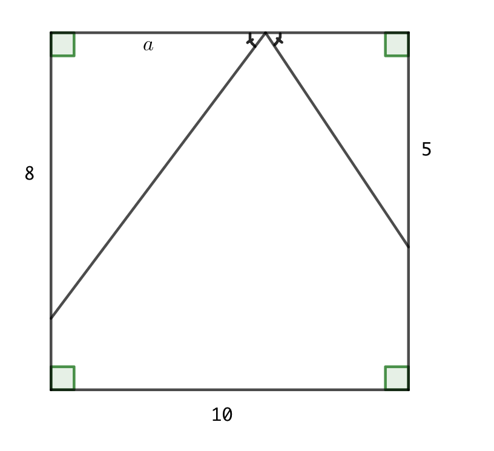
Då längden av ena triangeln är \( a \) är längden för motsvarande sida i den andra triangeln \( 10 - a \).
Vi bildar förhållandet \( \dfrac{a}{8} = \dfrac{10-a}{5} \).
Ekvationen har lösningen \(a = \dfrac{80}{13} = 6\dfrac{2}{13} \).
- Bestäm längden av h i figuren nedan.
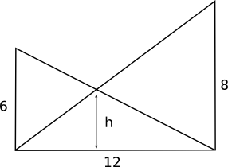
Tänk efter och bilda förhållanden. Vilka trianglar är likformiga?Vi delar upp sträckan med längden 12 i \( x \) och \( y \). Likformigheten ger:
\( \dfrac{6}{12} = \dfrac{h}{12-x} \) och \( \dfrac{8}{12}=\dfrac{h}{x} \) som förenklas till \( h=\dfrac{6(12-x)}{12} \) och \( x=\dfrac{12h}{8} \).
När vi kombinerar dessa får vi \( h=\dfrac{6(12-\dfrac{12h}{8})}{12} \). När vi löser ut \( h \) härifrån får vi \( \dfrac{24}{7} = 3\dfrac{3}{7} \).
- Visa att uppställningen i den föregående uppgiften endast är beroende av höjden för \( a \) och \( b \).
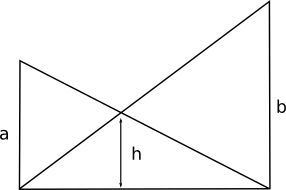
Lös först uppgiften ovan.
Uppgiften ovan ger att \( h=\dfrac{6(12-\dfrac{12h}{8})}{12} = \dfrac{6\cdot 12 -\dfrac{6\cdot 12h}{8}}{12} = \dfrac{6\cdot 12}{12}-\dfrac{6\cdot 12h}{8\cdot 12h} \).
Det kan vi skriva som \( h+\dfrac{6}{8}h=6 \) och \( \dfrac{8+6}{8}h=6 \) som ger att \( h=\dfrac{6\cdot 8}{8+6} \) som endast består av längderna \( a \) och \( b \).
Alltså \( \dfrac{ab}{a+b} \)
- Gyllene snittet är ett matematiskt sätt att dela en sträcka. Bestäm värdet för det gyllene snittet då vi får det genom att dela en sträcka så att en längre del a och en kortare del b delas så att hela sträckan a+b förhåller sig till a som a förhåller sig till b. Mera om gylle snittet kan du läsa på Wikipedia.
Börja med att rita en bild!
0,61803
- Bestäm med hjälp av likformighet höjden i skolans gymnastiksal eller något annat högt utrymme.
Jobba med likformighet. Utnyttja det som du lärde dig då du löste uppgiften där du bestämmer höjden av trädet.